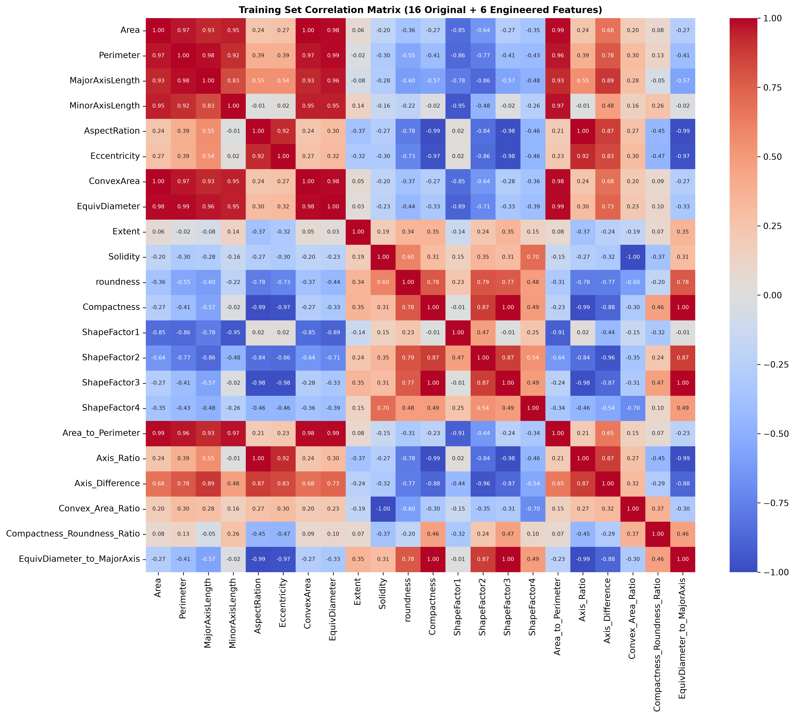

Phase 4 Milestone Report
| Feature Name | Formula | Physical / Morphological Purpose |
|---|---|---|
| Area_to_Perimeter | Area / Perimeter | Dimensional boundary efficiency |
| Axis_Ratio | MajorAxisLength / MinorAxisLength | Cross-validation of AspectRation |
| Axis_Difference | MajorAxisLength - MinorAxisLength | Absolute axial disparity in pixels |
| Convex_Area_Ratio | ConvexArea / Area | Inverse solidity measuring boundary concavity |
| Compactness_Roundness_Ratio | Compactness / roundness | Relative ratio between radial and circular compact forms |
| EquivDiameter_to_MajorAxis | EquivDiameter / MajorAxisLength | Normalized circle-equivalent diameter fraction |

The dataset was split using stratified 3-way sampling with fixed random state 42: Training Set: 9,480 samples (70.0%) | Validation Set: 2,031 samples (15.0%) | Test Set: 2,032 samples (15.0%). All feature evaluation and selection steps were performed exclusively on the training partition.
| Partition | Observations | Percentage | Role |
|---|---|---|---|
| Training Set | 9479 | 69.99% | Model fitting & feature selection |
| Validation Set | 2032 | 15.0% | Hyperparameter tuning & model comparison |
| Test Set (Held-Out) | 2032 | 15.0% | Untouched final model certification |